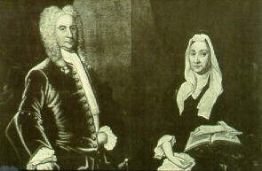
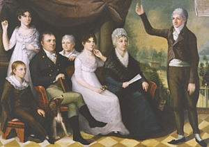

Marriage marked the passage of
young people into adulthood. As the new couple settled into a city
home and began to raise a family, young Albanians were identified as substantial citizens - worthy of full participation in the life of the community.
Because most Albany adults were married, we might say that marriage represented
a preferred or ideal status. However, not all the city's sons and
daughters would find a mate and prosper - at least not in the Albany setting.
Little was said about finding a marriage partner in the community's
literary record. 
However, for the six or more generations prior to the nineteenth century, the
Colonial Albany Social History Project has
developed some perspective on early Albany marriages as a result of assembling
and analyzing a large body of marriage materials - namely church, bible, probate
records, and other legal documents. The city marriage mosaic also enables us
to appreciate the important role Albany marriages played in the evolving settler
society of the greater Hudson-Mohawk region. From the earliest days, sons and daughters of Albany's more prosperous families married each other, the children of wealthy outsiders, and also promising but undistinguished
émigrés. For example, Schuylers married Van Rensselaers
and Wendells, Van Cortlandts from downriver, and talented newcomers including
Robert Livingston and Alexander Hamilton. Thus, budding fortunes
were preserved and often enhanced through marriage. Similarly, middling
and marginal people married within their means - although the variations
were much more diverse. Marriages occurred across cultural lines - the most obvious involving daughters of Albany's founders - the New Netherland Dutch, with English and Irish soldiers, Scottish traders, and opportunists from New England and the other North American colonies.
A few of the newcomers including Captain Henry Holland brought wives with them. But most of those who came after the New Netherland period were single,
young men - numbering more than a thousand before 1800. In contrast, fewer than fifty single, young women settled in Albany during that period. Most of the newcomers who stayed in Albany were married within a few years of their arrival. For soldiers, traders, and other young men, marriage to the daughter of an established city family was an important step toward achieving acceptance and success
within the Albany framework. Virtually all of the successful émigrés
before the American Revolution married a daughter of an established although
sometimes struggling early Albany family. The five daughters of middling
carpenter Jacob Van Valkenburgh and Margarita Radcliff, who married newcomers
Thomas Lynott, John Vernor, John Tayler, Hugh Denniston, and James Bloodgood during the third quarter of the eighteenth-century, provide an outstanding
but not isolated example. While such unions almost always benefited both static and successful Albany families, the internal social consequences were enormous as literally hundreds of city sons were left to find a mate from outside of Albany. Typically, a native son's relocation from the city followed his marriage to a non-native woman. The story of sheriff turned lawyer/civil servant Abraham Yates, Jr. bringing the daughter of a successful Schaghticoke farmer to his Market Street home was a less common scenario. With so many sons of Albany finding their futures in surrounding Rensselaerswyck, an outlying community, or on the frontier, the names of many of Albany's earliest families disappeared from city rolls. Although masked in a patriarch-based public record, those families remained an important part of the community as native stock embodied in the daughters of New Netherland represented a important element of virtually every old and new early city family. Early Albany marriage partners were younger than in most colonial communities. Most partners were within a year or two in age. Typically, men married at age twenty-one or
twenty-two with their wives a year or two younger. For young men and women, marriage represented perhaps the most important defining moment in an individual's life - a powerful predictor of what they might become. The demographic
success of a marriage embodied in a large number of surviving children
represented another key life attribute. The Colonial Albany Project
attaches great significance to the marriages of community people.
Marriage patterns and subsequent family histories are an integral part
of our ongoing inquiry and provide a critical perspective on the lives
of the people of colonial Albany and their world. Teenaged marriage
partners were uncommon - most often occurring in the case of an expectant
bride. First marriages involving mates over the age of thirty also
were infrequent - and may be tied to the groom's days in the military,
at sea, or on the frontier. Surviving partners often remarried after
the loss of a spouse - particularly during the first two decades of the
marriage. Middle-aged widowers remarried but post-childbearing widows typically
did not. In the case of widows, husband's conditional bequests of
property as long as wives did not remarry may have deterred re-marriage.
Few older survivors remarried - either continuing to reside in their home
or moving in with children or other kin. Some widowed and single
people were able to live quite long lives. More than a hundred early
Albany residents survived past 80 and as many as fifty community people
lasted past their ninetieth birthdays. The notion of early Americans
having an average life expectancy of less than fifty years is skewed downward
by a high infant and child mortality rate. Many early Albany people
lived through their golden years and beyond.
Teenaged marriage
partners were uncommon - most often occurring in the case of an expectant
bride. First marriages involving mates over the age of thirty also
were infrequent - and may be tied to the groom's days in the military,
at sea, or on the frontier. Surviving partners often remarried after
the loss of a spouse - particularly during the first two decades of the
marriage. Middle-aged widowers remarried but post-childbearing widows typically
did not. In the case of widows, husband's conditional bequests of
property as long as wives did not remarry may have deterred re-marriage.
Few older survivors remarried - either continuing to reside in their home
or moving in with children or other kin. Some widowed and single
people were able to live quite long lives. More than a hundred early
Albany residents survived past 80 and as many as fifty community people
lasted past their ninetieth birthdays. The notion of early Americans
having an average life expectancy of less than fifty years is skewed downward
by a high infant and child mortality rate. Many early Albany people
lived through their golden years and beyond.